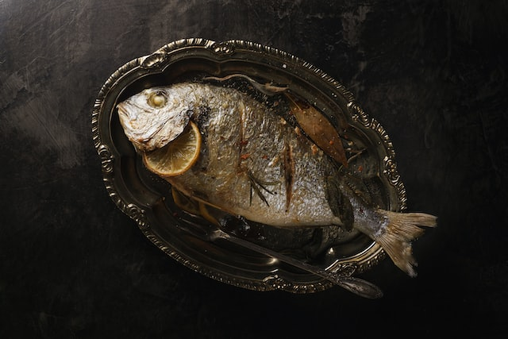

Grilled Tilapia

Description
Fresh, samptuous, mouth watering meal straight from the lake to your plate. Ideal for casual dinning or weekend backyard parties.
Ingredients
- One mid-sized tilapia fish
- 100g molten butter
- 35ml soy sauce
- 25g Lucile mixed herbs
- Seasoning (Salt & Pepper)
- 5 cloves of garlic; ground
Steps
- Pre-heat the grill to around 150˚C
- Make seven slits on the fish diagonnaly
- Apply molten butter generously, followed by Lucile's mixed herbs and seasoning
- Gently place the fish on the grill and wait 15 minutes before turning the other side
- Brush with soy sauce continuously for 2 minutes on both sides
- Remove when slightly browned and sprinkle ground garlic while still sizzling hot
- Enjoy while still hot